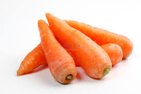
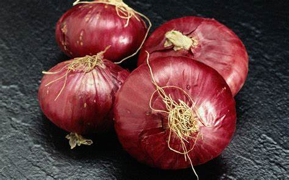

Fruits, vegetables, spices, grains, pulses, and such other crops thrive
in India. Due to the large amounts of vegetables produced in India, we
can vegetable export from India too. Many vegetables are included in the
export of vegetables from India like Onion, Broccoli, Brinjal, Spinach,
cabbage, Green chilies so on, and so forth. Pisum Foods is a leading
vegetable importer from India today. We work on the export of
Indian vegetables, fruits, spices, pulses, oilseeds, and such other products.
At Pisum Foods, we believe that the Customer is our King. We, therefore, assist our clients in each step on the way while exporting vegetables in India. Being one of the best vegetable exporters in India, we strictly follow all the health and safety measures of the Government of India. Pisum Foods is the largest and most reliable vegetable exporter in India. Our processes are completely transparent and we make sure that the desired products reach their destination safe, fresh, and on time. If you are looking for vegetable import from India, Pisum Foods is the best choice!
Carrot
Carrots are one of the most widely cultivated root vegetables in the
world. Known for their bright orange color, they are rich in beta-carotene,
which the body converts into vitamin A — essential for good vision, skin
health, and immune function. Carrots can be consumed raw or cooked, and
they add a natural sweetness to both savory and sweet dishes.
Carrot or Daucus carota is a root vegetable and is known to be perfect
health food. It is crunchy, tasty, and highly nutritious. The Carrots
exporter in India exports huge quantities of the vegetable each year.
Due to its various health and medicinal uses and benefits, the Carrots
export from India has been increasing rapidly over the decades. The
Indian Carrots exporter, therefore, is exporting more and more products
each year. This Carrots export includes the export of various varieties
and qualities of the product

Specifications
- Size: 15–20 cm long, tapered shape
- Color: Bright orange
- Texture: Crisp and firm
- Packaging: 10 kg or 20 kg mesh bags and cartons
- Shelf Life: 3–4 weeks when refrigerated
- Uses: Raw consumption, cooking, juicing, and food processing
Onion
The demand for Indian Onion in the world is growing rapidly. India
is the second-largest producer of onions across the world. Onion
export from India around 2182826.23 MT of onion to several countries
around the world. The export of onion from India is worth Rs. 3467.06 crores/ 497.94
USD Millions during the period 2018-2019. India exports onions to several countries
like Bangladesh, Nepal, Sri Lanka and so on.
Many countries do onion import from India. Onion exporter in India export varieties
like Agrifound Dark Red, Agrifound Light red, NHRDF Red and so on. Onions are grown in
various states across the country including Maharashtra, Karnataka, Madhya Pradesh,
Gujarat, Bihar, Andhra Pradesh, Haryana, and Telangana. Indian onions are especially popular
across the globe because of their pungency

Specifications
- Size: 4–7 cm diameter
- Color: Red, white, or yellow skin
- Texture: Dry outer skin, firm inner layers
- Packaging: 10 kg or 25 kg mesh/net bags
- Shelf Life: 4–6 weeks in dry storage
- Uses: Curries, soups, salads, pickles, and sauces